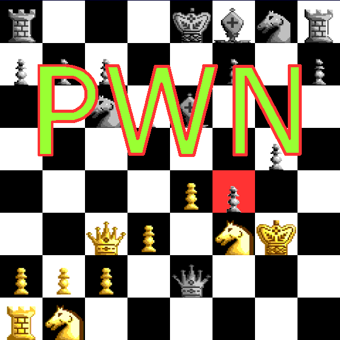

Comic JK 32
When I Feel Like It
⇤
<
?
>
⇥

⇤
<
?
>
⇥
Forum
.
RSS
.
Digg
.
Facebook
.
Reddit
.
Twitter
.
Stumbleupon
KxF1. NOT a checkmate For the KING to have been put in CHECK, the red square pawn would've HAD to have moved up into it's present position on the LAST move to date. This put the KING in CHECK but ONLY CHECK because the pawn moved into an "en passant" capture position. Meaning the "gold" pawn next to the red aquare pawn moves to f5 and the red square pawn is captured. This frees the KING from CHECK and the game progresses from there! >Actually, moving to an en passant square must be done on the pawn OWNER'S 4th file. This pawn is on the OPPONENT'S 4th file, so no capture, checkmate, GG, you suck. The pawn clearly captured... there is a black pawn on the starting position in that same rank. Additionally the pawn couldn't have moved two spaces... learn your chess. Yes, it is... My dear goodness. If you're reading this comic, and you can't play chess... Only checkmate if you play en passant, oui? what the phoque j'Ai dit who cares whatever ostie ! No its a checkmate no matter what, check the bishop at F4 I'm pretty sure kxf1 was a joke, since there isn't even a piece at f1, and the king couldn't get there if there was one, and it would still be covered by the queen anyway. - Would it have been a better joke to say king to g3? It's not checkmate. The king (at this moment) is not actively in check. That is, there is not a piece that could take it on the next move. If the king moves to any of the adjacent squares, then yes, he'd be in check. However, he could move any of the pawns around him. I think what the comic is referring to is the fact that the queen can be taken if it takes the pawn, which any chess player with any experience would know is something that you should avoid. >Yes he is, from the pawn that's highlighted in red... >>Gold is moving upwards... >>>The highlighted pawn is silver... >>The Queen doesnt have to take that pawn though, it can take the one straight ahead then get the one to its left >>> it's a king doofus... and whilst it's rarely ever likely to get like that, it is still check... Ben> Big words without meaning. It's checkmate from the pawn in red. game. Ben> Edit: btw, the king is the one in check from the pawn on the red square. The other one is the queen. The guy that with big words that said the king is not actively in check is either blind or a moron trying to act smug. xkcd hates people that act like smart asses. set. (not match!) whoever things this isn't a checkmate is either a troll or an idiot... an en passent capture, by gold pawn to f-5 would take the king out of check... hence, pending the actualy rules of the game it may or may not be checkmate > What the hell is wrong with you? That is not how en passant capture works. The black pawn would have to be on row 5 and you'd have to move to F-6 for that to work. There's no such thing as an "en passant capture" to rank 5. It's checkmate. Checkmate by the pawn on f4 fuck. Anyone else tried to establish which tile was a1 (top right or bottom left) and noticed that wherever it is, it's the wrong colour? I think you mean *prawn >Agreed. Board set-up is incorrect. Wait, this is a comment box? I thought that was just some random crap from the author... and I thought it was a poorly written parody of a flame war... damn. >+1 >Thank you, sir. That was MADE OF WIN. guys this can't be en passen. for that to happen, the red square pawn would have had to move up 2 spaces next to the gold one. but if you look, it's doubled up pawns in that row, meaning that it got there by taking another piece that was sitting there. =P >> It's also the wrong row. >Nowhere does the comic actually say that the board represents a checkmate... Except in the alt tag. dsadsadsad mate bitches. but the board is fucking wrong anyway. The board is incorrect, white should be the top-left/bottom-right square, but nonetheless, it is checkmate. No en-passant possibility.